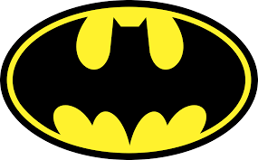

Batsite 🦇
Conhecendo a Batfámilia:
Batman 
Asa-Noturna  Alfred 🎩
Capuz Vermelho
Alfred 🎩
Capuz Vermelho  Robin
Robin  Batgirl
Batgirl 
História do maior detetive do mundo:
🦇 História Completa do Batman
Introdução
Batman é um dos super-heróis mais icônicos da cultura pop mundial. Criado por Bob Kane e Bill Finger, o
personagem fez sua primeira aparição na revista Detective Comics #27, em maio de 1939. Desde então, o
Cavaleiro das Trevas tem sido símbolo de justiça, vingança e coragem, atuando nas sombras de Gotham City
para proteger os inocentes e enfrentar o crime organizado.
Clique para ver seus principais vilões